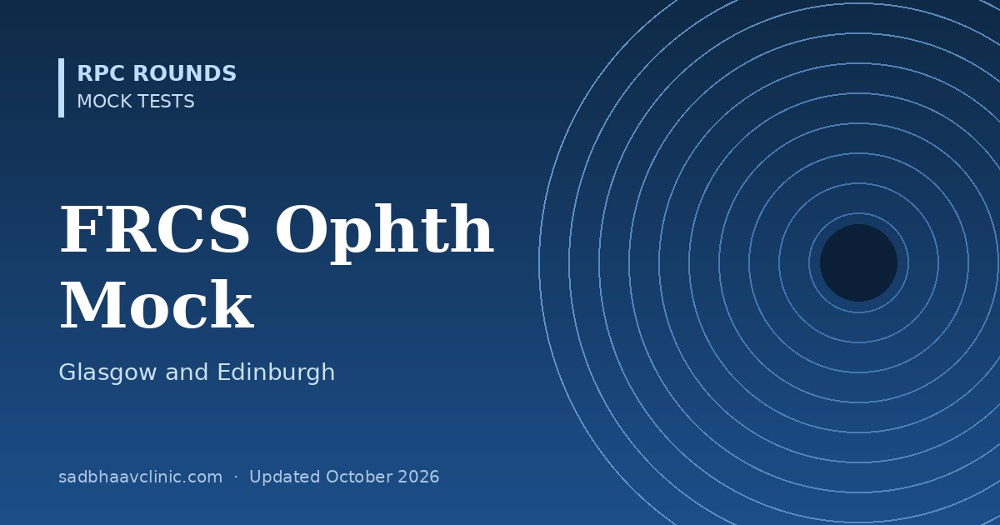

FRCS Ophthalmology Mock Test (Glasgow and Edinburgh): 50 MCQs
Last updated: October 2026
A timed 50-question mock for the FRCS Ophthalmology examinations of the Royal College of Physicians and Surgeons of Glasgow and the Royal College of Surgeons of Edinburgh, which test the scientific basis of ophthalmology and its application to common conditions.
- Glasgow: the written Parts 1 and 2 are taken online with remote proctoring. From 1 January 2028 the College will no longer accept ICO passes as exemptions.
- Edinburgh: the ophthalmology examination pathway is being revised for early 2027, moving to three components (a written MCQ paper, a written SBA paper, and a structured oral with OSCE).
- This mock mixes anatomy, physiology, pharmacology, pathology, microbiology, genetics, optics and investigations with applied clinical questions.
Planning to work or train abroad? Read our guide to ophthalmology exams abroad for formats, eligibility and official links.


Want thousands more practice questions?
OKAT Decoded covers the same core ophthalmology curriculum in 10,200 original MCQs, every answer explained, with 18 full-length mock tests.
All questions are original and written for practice. They are not taken from any past paper, and this test is not affiliated with or endorsed by the examining body. Exam formats change: confirm details on the official website.
📘 Want more exam-ready material? See Most Commons in Ophthalmology on Kindle, or browse all my books.
Looking for an eye specialist in Ahmedabad? Learn about our Eye Department or book a consultation with Dr. Dhaval Patel.